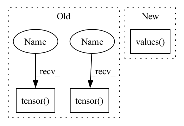

Pattern ID :11170

Before Change
continue
assert conf["positions"].attrs["units"] == "Å"
pos = pt.tensor(conf["positions"][...], dtype=pt.float32)
assert pos.shape == (z.shape[0], 3)
assert conf["formation_energy"].attrs["units"] == "eV"
y = pt.tensor(conf["formation_energy"][()], dtype=pt.float64)
assert y.shape == ()
assert conf["forces"].attrs["units"] == "eV/Å"
neg_dy = pt.tensor(conf["forces"][...], dtype=pt.float32)
After Change
mols = h5.items()
elif version == "2.0":
assert len(h5.keys()) == 0
mols = list(h5.values())[0].items()
else:
raise RuntimeError(f"Unsuported layout verions: {version}")
In pattern: SUPERPATTERN
Frequency: 4
Non-data size: 3
Instances
Fragment ID: 38223943
Project Name: torchmd/torchmd-net
Commit Name: fdbbd9d91ea0ec8e8a0ea2ec63be8b8bd2e4cb61
Time: 2022-10-17
Author: r.galvelis@acellera.com
File Name: torchmdnet/datasets/ace.py
M Class Name: Ace
N Class Name: Ace
M Method Name: sample_iter(2)
N Method Name: sample_iter(2)
M Parent Class: Dataset
N Parent Class: Dataset
M File Name: torchmdnet/datasets/ace.py
N File Name: torchmdnet/datasets/ace.py
M Start Line: 81
M End Line: 125
N Start Line: 110
N End Line: 140
'>
Before Change
continue
assert conf["positions"].attrs["units"] == "Å"
pos = pt.tensor(conf["positions"], dtype=pt.float32)
assert pos.shape == (z.shape[0], 3)
assert conf["formation_energy"].attrs["units"] == "eV"
y = pt.tensor(conf["formation_energy"][()], dtype=pt.float64)
assert y.shape == ()
assert conf["forces"].attrs["units"] == "eV/Å"
dy = -pt.tensor(conf["forces"], dtype=pt.float32)
assert dy.shape == pos.shape
assert conf["partial_charges"].attrs["units"] == "e"
pq = pt.tensor(conf["partial_charges"], dtype=pt.float32)
assert pq.shape == z.shape
assert conf["dipole_moment"].attrs["units"] == "e*Å"
dp = pt.tensor(conf["dipole_moment"], dtype=pt.float32)
assert dp.shape == (3,)
// Skip samples with large forces
if self.max_gradient:
After Change
load_confs = self._load_confs_1_0
elif version == "2.0":
assert len(h5.keys()) == 1
mols = list(h5.values())[0].items()
load_confs = self._load_confs_2_0
else:
raise RuntimeError(f"Unsuported layout verions: {version}")
'>
Fragment ID: 38224007
Project Name: torchmd/torchmd-net
Commit Name: d23e6500f2cef1fa56d6c99ce5fdb983f1379bca
Time: 2022-10-28
Author: peastman@stanford.edu
File Name: torchmdnet/datasets/ace.py
M Class Name: Ace
N Class Name: Ace
M Method Name: sample_iter(2)
N Method Name: sample_iter(1)
M Parent Class: Dataset
N Parent Class: Dataset
M File Name: torchmdnet/datasets/ace.py
N File Name: torchmdnet/datasets/ace.py
M Start Line: 72
M End Line: 123
N Start Line: 144
N End Line: 206
'>
Before Change
assert pos.shape == (z.shape[0], 3)
assert conf["formation_energy"].attrs["units"] == "eV"
y = pt.tensor(conf["formation_energy"][()], dtype=pt.float64)
assert y.shape == ()
assert conf["forces"].attrs["units"] == "eV/Å"
neg_dy = pt.tensor(conf["forces"][...], dtype=pt.float32)
assert neg_dy.shape == pos.shape
assert conf["partial_charges"].attrs["units"] == "e"
pq = pt.tensor(conf["partial_charges"][:], dtype=pt.float32)
assert pq.shape == z.shape
assert conf["dipole_moment"].attrs["units"] == "e*Å"
dp = pt.tensor(conf["dipole_moment"][:], dtype=pt.float32)
assert dp.shape == (3,)
// Skip samples with large forces
if self.max_gradient:
After Change
mols = h5.items()
elif version == "2.0":
assert len(h5.keys()) == 0
mols = list(h5.values())[0].items()
else:
raise RuntimeError(f"Unsuported layout verions: {version}")
'>
Fragment ID: 38223940
Project Name: torchmd/torchmd-net
Commit Name: fdbbd9d91ea0ec8e8a0ea2ec63be8b8bd2e4cb61
Time: 2022-10-17
Author: r.galvelis@acellera.com
File Name: torchmdnet/datasets/ace.py
M Class Name: Ace
N Class Name: Ace
M Method Name: sample_iter(2)
N Method Name: sample_iter(2)
M Parent Class: Dataset
N Parent Class: Dataset
M File Name: torchmdnet/datasets/ace.py
N File Name: torchmdnet/datasets/ace.py
M Start Line: 81
M End Line: 125
N Start Line: 110
N End Line: 140
'>
Before Change
feature_embeddings = gm(features)
self.assertEqual(feature_embeddings["f1"].values().size(), (3, 2))
self.assertTrue(
torch.allclose(feature_embeddings["f1"].lengths(), torch.tensor([2, 0, 1]))
)
self.assertEqual(feature_embeddings["f2"].values().size(), (5, 3))
self.assertTrue(
torch.allclose(feature_embeddings["f2"].lengths(), torch.tensor([1, 1, 3]))
)
// TODO(T89043538): Auto-generate this test.
After Change
)
self.assertEqual(sequence_embeddings["f1"].values().size(), (3, 5))
self.assertEqual(sequence_embeddings["f2@t1"].values().size(), (1, 5))
self.assertEqual(sequence_embeddings["f2@t2"].values().size(), (1, 5))
def test_device(self) -> None:
config = EmbeddingConfig(
'>
Fragment ID: 38223939
Project Name: pytorch/torchrec
Commit Name: 4f2f7cde4f35c0c239f665cb9851ef0007663cd1
Time: 2022-02-05
Author: xingl@fb.com
File Name: torchrec/modules/tests/test_embedding_modules.py
M Class Name: EmbeddingCollectionTest
N Class Name: EmbeddingCollectionTest
M Method Name: test_fx(1)
N Method Name: test_fx(1)
M Parent Class: unittest.TestCase
N Parent Class: unittest.TestCase
M File Name: torchrec/modules/tests/test_embedding_modules.py
N File Name: torchrec/modules/tests/test_embedding_modules.py
M Start Line: 226
M End Line: 238
N Start Line: 223
N End Line: 237